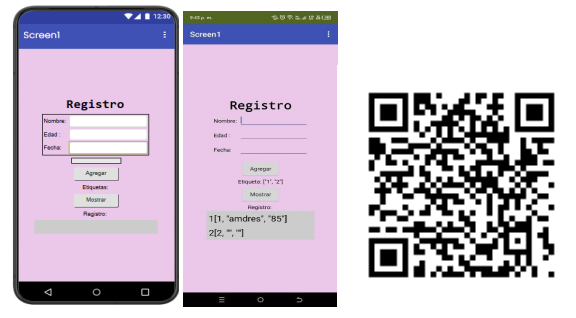
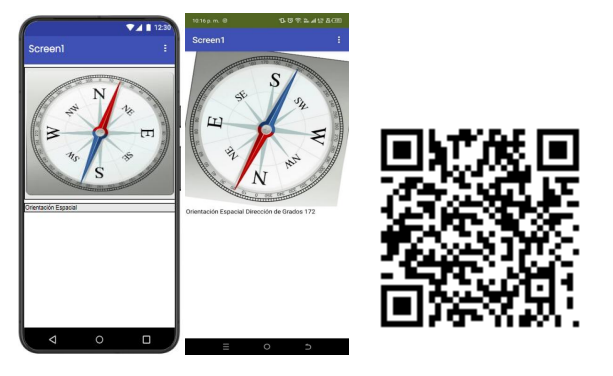
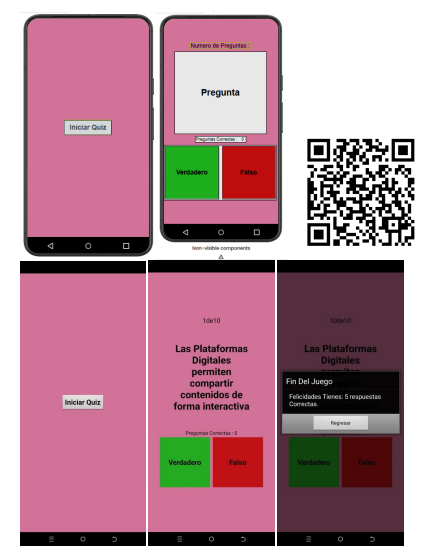

Fase 4: Desarrollo Móvil con App Inventor
¿Qué es MIT App Inventor?
MIT App Inventor es una plataforma de programación visual creada por el MIT que permite desarrollar aplicaciones móviles para dispositivos Android e iOS de manera sencilla.
Con App Inventor se pueden crear:
- 📚 Aplicaciones Educativas
- 🎮 Juegos Móviles
- 🔢 Calculadoras
- 💚 Aplicaciones de Salud
- 📍 Apps con GPS, cámara y sensores
🔗 Conoce más en appinventor.mit.edu
Interfaz de App Inventor
🎨 Designer (Diseñador)
Espacio donde se construye la apariencia de la aplicación.
- Paleta: Componentes disponibles (botones, etiquetas, sensores, etc.)
- Visor: Vista previa de cómo se verá la app en el móvil
- Componentes: Lista de elementos agregados a la aplicación
- Propiedades: Configuración de color, tamaño, texto, fuente, visibilidad
🧩 Blocks (Bloques)
Área donde se programa el comportamiento mediante bloques lógicos que se unen como piezas de rompecabezas. Aquí se controlan eventos, acciones, variables, condicionales y procesos matemáticos.
Componentes Principales
👤 Interfaz de Usuario
Button, Label, TextBox, Image - Permiten interactuar con el usuario.
📐 Layout
HorizontalArrangement, VerticalArrangement - Organizan visualmente los elementos.
🎬 Multimedia
Cámara, Player, Sound, VideoPlayer - Trabajan con audio, video e imágenes.
📡 Sensores
AccelerometerSensor, LocationSensor, OrientationSensor - Acceden a funciones del dispositivo.
Usos Educativos
- Aplicaciones educativas: Calculadoras, diccionarios, juegos didácticos, apps de preguntas.
- Aprendizaje de programación: Eventos, variables, condicionales, bucles y procedimientos.
- Pensamiento computacional: Resolución de problemas, diseño lógico y organización de algoritmos.
- Proyectos interdisciplinarios: Integración en matemáticas, ciencias, tecnología, geografía e idiomas.
- Aplicaciones reales: Soluciones prácticas para el entorno escolar o comunitario.
Proyectos Desarrollados
Ejercicios Previos
📋 Aplicativo 1: Registro de Personas
Formulario para capturar y almacenar datos básicos de usuarios.

Formato: .apk | Compatible con Android
🧭 Aplicativo 2: Brújula
Uso del sensor de orientación para mostrar dirección en tiempo real.

Formato: .apk | Compatible con Android
🏆 Proyecto Final: Quiz Verdadero/Falso
Descripción Funcional:
- Pantalla principal con botón para comenzar
- Preguntas sobre contenidos digitales y multimediales
- Botones "Verdadero" / "Falso" para responder
- Validación automática con retroalimentación inmediata
- Contador de respuestas correctas
- Navegación automática entre preguntas
- Pantalla final con puntaje total
- Opción para reiniciar la actividad

Formato: .apk | Tamaño: ~5 MB | Compatible con Android 5.0+
Objetivo Pedagógico:
Desarrollar y fortalecer los conocimientos de los estudiantes sobre contenidos digitales y multimediales mediante un juego de preguntas, promoviendo el aprendizaje dinámico y el uso de herramientas digitales de programación.